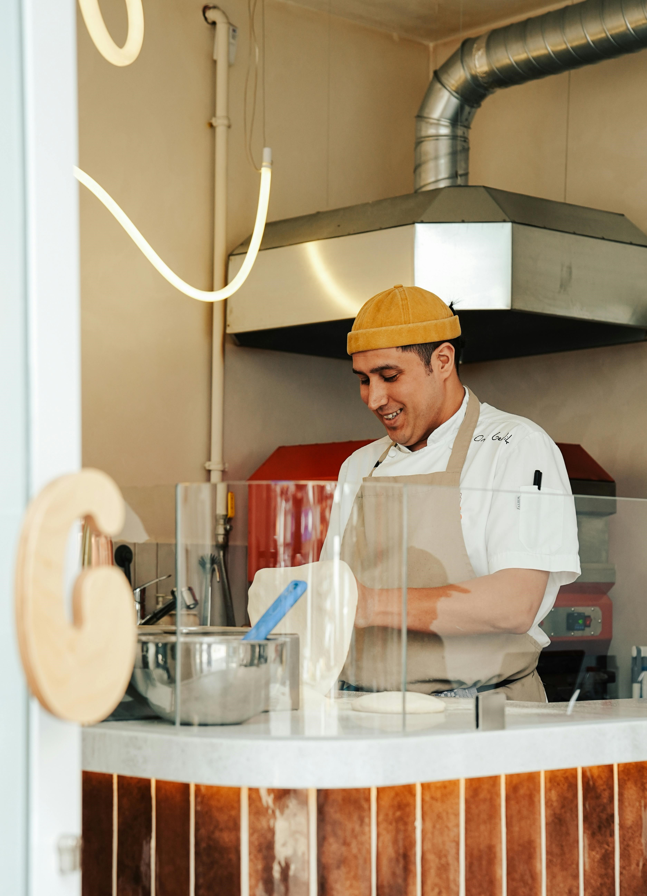

Our story
It started the old-school way—late nights, a hot oven, and a family recipe that was never written down. Passed from one generation to the next, our pizza was born in kitchens where loyalty mattered, arguments were loud, and the sauce always simmered a little longer than planned. Some things you rush. This isn't one of them.
When the family crossed the ocean, they brought more than suitcases. They brought traditions, stubborn pride, and a belief that good food is a kind of power. The neighborhood changed, the city grew, but the rules stayed the same: dough made fresh every day, sauce built from scratch, and recipes protected like family secrets. You don't cut corners. You don't talk too much. And you always take care of your own.
Our place isn't about pretending to be tough. It's about earning respect, one slice at a time. Around here, everyone's welcome as long as you come hungry and leave happy. Sit down, grab a pie, and enjoy the kind of pizza that makes you understand why some things are worth being a little protective over. Capisce?